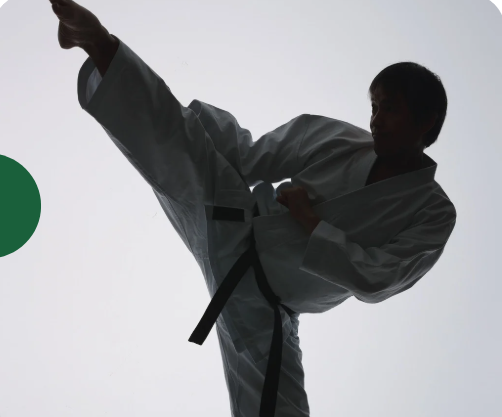

KARATE BOKS va O'ZBEK JANG SAN'ATI
15-maktabning 9-sinf o'quvchisi, 14 yoshli halqaro chempion, 1-DAN qora belbog' sohibi va yoshlar murabbiyi. Guliston shahar "Kelajak" markazi sport koordinatori.

Xalqaro jang san'ati musobaqasi mutlaq g'olibi va xalqaro toifadagi sportchi.
Qit'a miqyosidagi nufuzli turnirlarda yuqori natija va oltin medallar sohibi.
O'zbekiston miqyosidagi chempionlik unvoni va milliy jang san'ati ustasi.
Ko'chadagi har bir harakat — bu sportchining tabiiy va tekin reklamasi.
Sportchining gavda tuzilishi sportning eng ishonchli isboti.
Intizomli va toza sport kiyimi atrofdagilar e'tiborini tortadi.
Sport faoliyati va "Kelajak" markazi loyihalarini raqamlashtirish uchun zamonaviy kompyuter bilimlarini egallash.
Xalqaro musobaqalar va muloqotlarda erkin tajriba almashish uchun tilni chuqurlashtirilgan tarzda o'rganish.
Shaxsiy xalqaro yutuqlarni "Kelajak" markazi nomi va nufuzi bilan uyg'unlashtirish.
"Kelajak" markazi to'garaklariga bolalarni tizimli jalb etish va guruhlarni ko'paytirish.
Nafaqat shahar, balki chekka qishloqlarda ham sportni rivojlantirish va barcha g'alabalarni markaz nomidan kiritish.